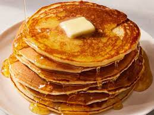

Pancakes with syrup
Ingredients:
- 1 cup all-purpose flour
- 2 tablespoons sugar
- 2 teaspoons baking powder
- 1/2 teaspoon salt
- 1 cup milk
- 1 egg
- 2 tablespoons vegetable oil
- 1/2 teaspoon vanilla extract
- 1/2 cup maple syrup
Steps:
- In a mixing bowl, combine flour, sugar, baking powder, and salt. Stir in milk, egg, oil, and vanilla until smooth.
- Pour batter by 1/4 cupfuls onto a greased hot griddle. Turn when bubbles form on top of pancakes. Cook until the second side is golden brown.
- Serve with warm maple syrup.